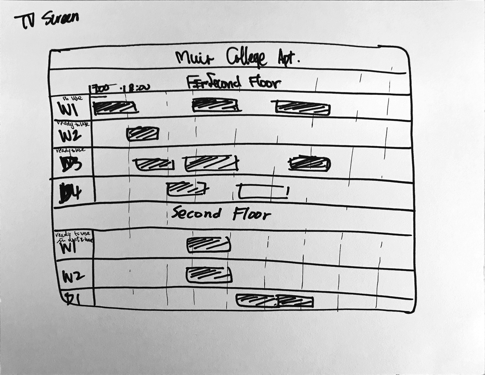

Persona: Mason is a college student living in Muir. Because he lives with a lot of suitemates on the same floor and sharing the same two dryers and two washers, he can not always use the machine when he wants. He wants to have an app to tell him when will the machine be available and it would be better to reserve for future usage.
Video:
PDF:


